CloudcastFabric manual
CloudcastFabric carries real IP multicast between machines that have no
multicast network — cloud instances, and on-prem plants reached over a VPN.
An agent runs on every participating host; applications send to and join
ordinary multicast groups on a virtual interface, and the fabric moves the
packets between hosts as unicast UDP. Nothing in the application changes: it
binds a group, it joins with IP_ADD_MEMBERSHIP, and the kernel delivers real
multicast frames at the far end.
It is built for professional audio-over-IP — AES67 and Livewire — so two things matter more than throughput:
- The jitter tail. The data plane is Rust with pinned real-time threads,
batched
recvmmsg/sendmmsgand pre-allocated buffers. Measured fabric hop delay is p50 17 µs, 100 % under 500 µs at every load tested. - Clocking. Every cloud host runs its own PTP grandmaster fed from the AWS Nitro PHC; a bridge instead slaves to the plant's existing grandmaster and paces its LAN egress on plant time. PTP is never tunnelled through the fabric — it is deliberately dropped at the encapsulation point. Receivers lock to a local master serving the same traceable time as every other host's.
This manual describes the system as it ships today: agent mesh, router and bridge modes, the controller and its web dashboard, the metrics surface, the timing stack, and the deployment conditions that must be met for any of it to work.
Contents
- Core concepts
- Architecture
- Deployment requirements
- Installation
- Configuration reference
- Operations
- Troubleshooting
- Scope and platform support
1. Core concepts
The virtual interface is the product. Each mesh agent creates ccf0, a
TAP (layer-2) device with a fabric address, and installs a route for
224.0.0.0/4 into it. Applications bind their sends and joins to that
interface and behave exactly as they would on a multicast LAN. ccf0 is a TAP
rather than a TUN for a specific reason: a TUN has no MAC address, so every
ptp4l on the fabric derived the same clock identity
(000000.fffe.000000) and clients rejected each other's announces as their
own. A real per-host MAC also keeps ARP and discovery traffic working for AoIP
applications.
Subscriptions come from the kernel, not from config. The agent reads
/proc/net/igmp for ccf0 every loop — whatever local applications have
actually joined — and reports that set to the controller. Two group ranges are
never reported: link-local 224.0.0.0/24, and the PTP group 224.0.1.129.
Routes are receiver sets. The controller answers with, per group, the list of agents that have subscribers, minus the recipient itself. A sender transmits a group only while somebody wants it; with no subscribers the TX pump drops the frame and does not advance the sequence number, so a receiver joining later does not count the idle stretch as loss.
Delivery is de-duplicated and reordered per source. Every received fabric packet passes through a 1024-slot sliding window keyed by the sending agent's address: a packet is Accept (new, injected), Dup (already seen) or Late (older than the window). It is also what the integrity counters on the dashboard and in §6.3 are derived from.
PTP never crosses the fabric. UDP 319 and 320 are dropped by both the mesh
TX pump and the bridge LAN pump unless --forward-ptp is given. Tunnelled PTP
would fight the local grandmasters through BMCA and carry fabric jitter into
clock servos; instead every host serves identical, independently-sourced GPS
time. Do not "fix" this.
2. Architecture
┌──────────────────────────────┐
│ Controller (.NET 8) │
│ NDJSON :8600 · web :8601/:8443│
└───────▲──────────────▲────────┘
hello / subs (TCP) │ │ routes push
│ │
┌──────────┐ fabric UDP 7777 ┌──────┴───┐ ┌───────────┐
│ Agent A │◀────────────────────▶│ Agent B │ │ Bridge │
│ TAP ccf0 │ (mesh: direct) │ TAP ccf0 │ │ AF_PACKET │
│ local GM │ │ local GM │ │ on eth │
└────▲─────┘ └────▲─────┘ └─────▲─────┘
│ app sends/joins 239.x.x.x │ │ real plant LAN
│ on ccf0, locks PTP locally │ │ multicast + IGMP
The data plane
ccf-agent is one Rust binary with three modes, and two pinned threads on the
packet path in each of them.
Mesh (--mode mesh) is what runs on a participating instance. The TX pump
reads Ethernet frames from ccf0, keeps only IPv4 multicast UDP, prepends the
20-byte fabric header, and unicasts one copy per target. The RX pump receives
fabric datagrams with recvmmsg (batch 32, MSG_WAITFORONE), de-duplicates,
and writes the original frame back into ccf0, where the kernel delivers it to
every locally joined socket.
MSG_WAITFORONEis not an optimisation, it is a correctness fix. A blockingrecvmmsgwithout it waits for the full batch: at 1,000 pps a 32-slot batch silently added ~32 ms of latency (measured p50 15.3 ms — exactly half the batch window).
Router (--mode router) has no TAP. It receives fabric packets and
forwards each to every configured member except the one it came from — the
relay counterpart to mesh mode's direct paths, for fan-outs large enough that
per-sender replication is wasteful.
Bridge (--mode bridge) has no TAP either. On one side is the fabric; on
the other, a real interface carrying genuine plant multicast, captured with an
AF_PACKET raw socket. See §4.6.
The control plane
The controller is a .NET 8 service. Each agent holds a persistent control session to the controller on port 8600, reports the multicast groups it needs, and is pushed the routes for them. Routes are recomputed and pushed to every agent whenever an agent registers, disconnects, or changes its subscriptions; subscription-to-route latency is about 1 ms. If the control session drops, the agent clears its route table and stops sending until it reconnects. (The session's wire protocol is internal and not a public interface.)
The address other agents send fabric traffic to is discovered, not configured — the agent takes the source address the kernel picks toward the controller. So the controller must be reachable over the same interface the fabric should use: on a bridge behind WireGuard this yields the tunnel address, which is why the cloud-side WireGuard host must route the VPC range back down the tunnel.
Direct peering
The controller bootstraps each agent as a WireGuard peer of the hub only, but the hub is a control plane, not a media relay — two agents that only peer the hub exchange no audio. So when a route is created between a provider and a consumer, the controller offers each end a direct peer to the other, on demand, and only for pairs that actually exchange media (no N² full mesh). The controller selects a path the two can genuinely reach each other on; a pair with no usable shared path is marked no path rather than left silently carrying nothing — the hub never relays media.
Applying an offer is additive and safe, and is gated behind --apply-peers (off
by default), so a fleet opts in explicitly. The Fabric page in the dashboard
renders the result as a peer matrix — direct / no-path / unknown, and whether a
route is live — so "why isn't A→B carrying audio" is answered at a glance rather
than by packet capture.
The encapsulation header
Each captured frame is carried inside the fabric with a small fixed-size
header (allow for it in MTU planning — see §3). It carries a per-agent
sequence number, used to detect loss and de-duplicate dual-path copies, and
a PTP-referenced send timestamp, which produces the ccf_fabric_delay_us
histogram at the receiver — meaningful only because both hosts are disciplined to
the same clock. The on-wire layout itself is internal to the fabric and not part
of the public interface.
Timing: per-host grandmasters
Nitro PHC (/dev/ptp0, GPS-disciplined)
└─ chrony ──▶ system clock (root dispersion ~1 µs, measured)
└─ ptp4l -f /etc/ccf/ptp-gm.conf ──▶ PTPv2 master on ccf0
└─ AES67 receivers on this host
One grandmaster per host, all serving the same traceable time, none of them talking to each other. Because inter-instance clock offset is single-digit microseconds and standard AES67 receive link-offsets are 1–4 ms, the residual disagreement is orders of magnitude inside budget.
A bridge is the exception, and inverts the relationship. A plant already has
a grandmaster — usually a piece of AoIP hardware — and the bridge must not
compete with it. So a bridge runs ptp4l slave-only against the plant
clock, disciplining its NIC's PHC to plant time:
Plant grandmaster (e.g. an Axia xNode)
└─ ptp4l slaveOnly=1 on the LAN NIC ──▶ /dev/ptpN follows plant time
└─ ccf-agent --pace-clock /dev/ptpN ──▶ LAN egress paced on plant time
slaveOnly 1 guarantees the bridge never announces and so can never win BMCA.
The PHC is read for pacing only and never written to system time — a Livewire
grandmaster runs an arbitrary timescale, so phc2sys would destroy the host's
wall clock. See 4.7.
Modes at a glance
| mesh | router | bridge | |
|---|---|---|---|
Creates ccf0 TAP |
yes | no | no |
| Talks to the controller | when --controller is given |
no — static --members only |
required |
| Where packets come from | apps on ccf0 |
other agents | AF_PACKET on --lan-iface |
| Subscriptions reported | kernel IGMP on ccf0 |
none | IGMP snooped on the LAN + --lan-subs |
Honours --cpu |
yes | yes | no |
3. Deployment requirements
| OS | Linux. Root (or CAP_NET_ADMIN + CAP_NET_RAW + RT privileges) — v1 runs as root. |
| Build toolchain | Rust stable for ccf-agent; .NET 8 SDK for the controller. |
| Timing packages | chrony on every host; linuxptp (ptp4l) on hosts serving PTP to local AES67 apps. |
| Instances | Nitro, ENA ≥ 2.10, PHC support — see below. |
| Network | Same VPC/AZ preferred (intra-AZ private traffic is free and lower jitter); cluster placement group for latency-critical members. |
Instances and the PHC
The PTP Hardware Clock is exposed as /dev/ptp0 by the ENA driver, but only on
instance types that support it and only once the driver option is set:
echo 'options ena phc_enable=1' | sudo tee /etc/modprobe.d/ena.conf
sudo reboot
ls /dev/ptp* # expect /dev/ptp0
ethtool -T ens5 # hardware timestamp capabilities
c7g does not support PHC at all — validated hosts were m7g.medium;
c8g and r7g also carry it. Confirm before you launch with
aws ec2 describe-instance-types --query 'InstanceTypes[].[InstanceType,PhcSupport]'.
A host without a PHC still carries fabric traffic perfectly well; it just has
no GPS-traceable reference for its local grandmaster, and one-way delay figures
measured against it are clock-offset artefacts rather than real numbers.
Kernel and interface settings
Reverse-path filtering must be off on the fabric interface. Bridged streams
arrive carrying their original plant source IPs, for which cloud hosts have no
route; strict or loose RPF drops them silently at the IP layer — the symptom is
UdpInErrors climbing in netstat -su while the application receives nothing.
The agent writes /proc/sys/net/ipv4/conf/ccf0/rp_filter = 0 itself when it
creates the interface, but the kernel uses the maximum of the all and
per-interface values, so check:
sysctl net.ipv4.conf.all.rp_filter # must be 0 for bridged source IPs
Host firewalls eat fabric traffic by default. A ufw default-deny policy
swallowed the first bridge run entirely. Allow the fabric port, and on a bridge
allow the tunnel and LAN interfaces (ufw allow in on wg0).
Virtualised bridge hosts need TX checksum offload disabled on the capture
interface. Frames captured from a veth or vNIC before the NIC computes
checksums carry deferred (zero) checksums; the far end rejects every one of
them as UdpInErrors. sudo ethtool -K $IFACE tx off. Physical plant capture
is unaffected — real senders checksum before the wire.
MTU
ccf0 defaults to MTU 1300 (--mtu). A 1300-byte IP packet becomes a
1314-byte Ethernet frame, plus the 20-byte fabric header, plus 28 bytes of
outer UDP/IP = 1358 bytes on the wire — inside a 1500-byte path and inside a
typical WireGuard MTU. Raise it only when the whole path (including any tunnel)
is known to be jumbo-clean; a VPC supports 9001 intra-VPC. AES67 packets are
far smaller than any of these limits, so the default never fragments real
media.
Ports and security groups
| Port | Proto | Direction | Purpose |
|---|---|---|---|
| 7777 | UDP | agent ↔ agent, agent ↔ router | Fabric data (--listen; any port, but all peers must agree) |
| 8600 | TCP | agent → controller | Control channel (NDJSON) |
| 8601 | TCP | operator → controller | Web dashboard, HTTP |
| 8443 | TCP | operator → controller | Web dashboard, HTTPS (when configured, see §4.3) |
| 9464 | TCP | controller → agent, operator → agent | Prometheus metrics (--metrics; the controller's poller always scrapes 9464) |
| 51820 | UDP | bridge ↔ cloud gateway | WireGuard, in bridged deployments |
| 319/320 | UDP | host-local only | PTP event/general — must not traverse the fabric |
Securing the control plane
Two rules, both enforced by where you place the ports rather than by the controller, and both required for a supported deployment.
Keep TCP 8600 on a private path. The control channel is the fabric's route table: an agent that reaches it registers, receives the routes and is sent traffic. Bind it to a security group that admits only your agent hosts, or carry it inside the same WireGuard tunnel a bridged site already uses. It is not a port to expose to a public interface.
Treat every dashboard identity as an administrator. Anyone who signs in —
through the Cognito pool or the break-glass password — has the full
management surface, and requests from loopback are trusted without signing in
at all so that local health checks can read /state. Scope the Cognito pool
to the people who should hold that, keep CCF_ADMIN_PASSWORD to a break-glass
value held in the systemd environment file, and restrict operator access to
8443/8601 the same way you restrict 8600. Front the dashboard with a
certificate your operators' browsers already trust.
4. Installation
4.1 Building
cargo build --release -p ccf-agent -p ccf-spike # target/release/ccf-agent
dotnet publish controller -c Release -o /opt/ccf-controller
ccf-agent has one dependency (libc) and builds in seconds. ccf-spike is
the bench tool used for verification (§6.7).
4.2 Cloud agent (mesh mode)
packaging/install.sh installs the binary, writes the environment file and
enables the systemd unit:
sudo packaging/install.sh target/release/ccf-agent mesh 7777 "" 10.77.0.1/24
Arguments are <binary> <mode> <listen> <peers> <tun-cidr>. Give each host a
distinct address in the fabric /24. Leave <peers> empty for a
controller-driven deployment — but note the installer writes no
--controller, so add it to CCF_EXTRA in /etc/ccf/agent.env:
CCF_EXTRA=--rt --controller 172.31.50.10:8600
then sudo systemctl restart ccf-agent. The journal should show:
ccf-agent mesh: tun=ccf0 addr=10.77.0.1/24 listen=:7777 peers=[] metrics=:9464 rt=true
control: connected to 172.31.50.10:8600
Without --controller the agent uses the static --peers list and replicates
every multicast frame to all of them regardless of who is listening.
4.3 Controller
sudo mkdir -p /etc/ccf
sudo tee /etc/ccf/controller.env >/dev/null <<'EOF'
CCF_ADMIN_PASSWORD=<break-glass password>
CCF_OIDC_AUTHORITY=https://cognito-idp.<region>.amazonaws.com/<user-pool-id>
CCF_OIDC_CLIENT_ID=<app client id>
CCF_OIDC_CLIENT_SECRET=<app client secret>
ASPNETCORE_URLS=https://0.0.0.0:8443;http://0.0.0.0:8601
EOF
sudo install -m644 packaging/ccf-controller.service /etc/systemd/system/
sudo systemctl enable --now ccf-controller
Startup logs ccf-controller: control on :8600, ui on :8601/:8443, oidc=on.
Points to be aware of:
- The control port 8600 is compiled in; it is not configurable.
- With no
ASPNETCORE_URLS, the controller bindshttp://0.0.0.0:8601only. HTTPS on 8443 is standard ASP.NET Core Kestrel configuration — the URL above plus a certificate (ASPNETCORE_Kestrel__Certificates__Default__Path/__Password, or the dev certificate). The reference deployment uses a self-signed certificate, so browsers warn on first visit. - OIDC is enabled only when both
CCF_OIDC_AUTHORITYandCCF_OIDC_CLIENT_IDare set; otherwise the login page offers the password alone. The Cognito app client's callback URL is the ASP.NET Core default,https://<host>:8443/signin-oidc, and the sign-out URL/signout-callback-oidc. Scopes requested areopenid,email,profile. - If
CCF_ADMIN_PASSWORDis unset or empty, password sign-in is refused outright — SSO or loopback only.
4.4 PTP grandmaster
On every host whose local applications need to lock to PTP:
sudo apt install chrony linuxptp # or dnf, per distro
sudo install -m644 packaging/ptp-gm.conf /etc/ccf/ptp-gm.conf
sudo install -m644 packaging/ccf-ptp-gm.service /etc/systemd/system/
sudo systemctl enable --now ccf-ptp-gm
Point chrony at the PHC first (refclock PHC /dev/ptp0 poll 0 dpoll -2 offset 0
is the usual AWS form) and confirm with chronyc tracking — the reference
hosts show root dispersion 0.4–1.0 µs. The unit waits for ccf0 to appear
before starting ptp4l, requires ccf-agent, and expects the binary at
/usr/local/sbin/ptp4l (adjust ExecStart if your distro installs to
/usr/sbin).
4.5 Router (optional)
ccf-agent --mode router --listen 7777 \
--members 172.31.50.81:7777,172.31.170.100:7777 --metrics 9464 --rt
Router mode is static only — it takes no --controller and holds no
subscription state. Every valid fabric packet goes to every member except its
source. Mesh agents pointed at a router simply list it as their peer. For the
fan-outs validated so far, direct mesh paths are both simpler and lower
latency; the router is there for large fan-outs.
4.6 Ground-to-cloud bridge
The bridge joins the fabric on behalf of a physical LAN. It needs IP
reachability to the controller and to the cloud agents — in the validated
deployment, WireGuard to a cloud instance that also acts as router
(net.ipv4.ip_forward=1, source/destination check disabled, and a security
group entry for the tunnel subnet; the bridge holds a route for the VPC range
via wg0).
sudo systemd-run --unit ccf-bridge --property Restart=always \
/opt/ccf/ccf-agent --mode bridge \
--lan-iface eth0 --lan-ip 192.168.1.50 \
--controller 10.99.0.1:8600 --listen 7777 --metrics 9464 --rt
Wired Ethernet is strongly preferred — Wi-Fi access points mangle multicast. What the bridge then does, with no static configuration:
LAN → fabric. An
AF_PACKETsocket captures IPv4 frames on the LAN interface. Multicast UDP for a group the controller has routed is encapsulated and unicast to the subscribing agents; everything else is ignored. A membership manager holds a real IGMP join on the LAN for every routed group (re-evaluated each second), so plant switches actually forward those streams to this port.fabric → LAN. Received fabric packets are de-duplicated and re-emitted as genuine multicast frames on the LAN interface, addressed to the original destination MAC.
IGMP snooping. LAN hosts' IGMPv1/v2/v3 membership reports and leaves are parsed and become this bridge's fabric subscriptions. v3 record types 2/4/5 (EXCLUDE/CHANGE_TO_EXCLUDE/ALLOW) count as joins; types 1/3 with no sources count as leaves. Liveness is counted in query rounds, not wall-clock: a group survives four consecutive unanswered general queries. This matters on a busy plant, where a receiver spreads its reports across the max-response window and an individual one can be missed — counting elapsed time instead lets a single missed report withdraw the route and stop the audio.
Querier. Every 30 s the bridge emits an IGMPv2 general query (router-alert IP option, max response 10 s, sourced from
--lan-ip) so memberships keep refreshing on LANs that have no querier. On a plant that already has one, both coexist and the lowest source IP wins the election. A group that has been quiet for two rounds additionally gets its own group-specific query (max response 2 s) before the bridge gives up on it, and expiry logs a warning naming the consequence:bridge: WARNING dropping 239.70.1.2 after 4 unanswered queries (127s since its last report) — the fabric route is being withdrawn and any receiver still joined will go silentKernel capture filter. The capture socket carries a BPF program admitting only IGMP plus the currently routed groups, reloaded whenever the route set changes. Without it every IPv4 frame on the segment is copied to userspace and discarded there: on a plant carrying ~17,000 pps of multicast against ~4,000 pps the fabric wanted, that is three quarters of the work wasted — and when the ring buffer cannot keep up, the frames the kernel drops include the IGMP reports above. Watch
ccf_lan_capture_drops_total; it should stay at 0.Loop safety.
PACKET_IGNORE_OUTGOINGkeeps the bridge's own emissions out of its capture path, and the bridge never reports kernel IGMP state — its own forwarding joins would otherwise reflect routes straight back as subscriptions.
--lan-subs remains available as a static seed, merged with whatever snooping
finds. It is no longer required: the validated sequence programs both
directions from live IGMP alone.
The bridge appears on the dashboard as bridge-<hostname>.
4.7 Egress pacing and the clock behind it
A WAN delivers AoIP in clumps. Measured London → Adelaide on a residential uplink: p50 spacing 0.856 ms against a 1 ms nominal, p99 7.0 ms, bursts to 53 ms, 128 reordered packets in 25,000 — while the stream itself was intact at 1000.0 pps. AES67 receivers size their buffers for even delivery and report overruns when a clump lands.
Both modes can absorb this. Set --lan-jitter-ms (bridge) or --jitter-ms
(mesh) to a budget in milliseconds; frames are then released on the sender's
cadence rather than forwarded on arrival. The cost is exactly that much fixed
latency, and 30–40 ms is the validated range.
Choosing the clock. The release cadence is only as stable as the clock
driving it, and CLOCK_REALTIME is slewed continuously by NTP (~150 µs RMS on
the reference bridge). --pace-clock selects a PTP hardware clock instead:
| Deployment | What auto picks |
How to make it available |
|---|---|---|
| Cloud (AWS Nitro) | /dev/ptp0 |
options ena phc_enable=1 in /etc/modprobe.d/ena.conf, then reboot. Check cat /sys/module/ena/parameters/phc_enable returns 1. Not all types support it — c7g does not; m7g, c8g, r7g do. |
| Bridge at a plant | the --lan-iface NIC's PHC |
Run ptp4l slave-only against the plant grandmaster (below). |
Measured effect, same hardware and path, 1 ms AES67:
| Receiver | Clock | p99 spacing | Pacing stdev | Reordered |
|---|---|---|---|---|
| Cloud, no pacing | — | 7.011 ms | 1958 µs | 128 |
| Cloud, paced | Nitro PHC | 1.010 ms | 9.4 µs | 0 |
| Plant, paced | NIC PHC → plant GM | 1.017 ms | — | 0 |
Be clear about what this does and does not buy. Within any one-second window
the short-term cadence is still CLOCK_REALTIME's, because the PHC is sampled
once a second off the hot path (see below) rather than read per packet. What the
hardware clock buys is that the buffer stops drifting against plant time over
hours, which is the failure that shows up as slowly climbing overrun counters on
receiving hardware. It is not sample-accurate hardware clocking.
Why the PHC is not read per packet. Some PHCs rate-limit clock_gettime —
the AWS Nitro clock refuses the large majority of calls when polled faster than
roughly 1 Hz, since it is designed to be sampled at that rate by chrony or
phc2sys. The agent therefore samples it on a background thread once a second and
publishes phc − CLOCK_REALTIME; the packet path reads CLOCK_REALTIME (a vDSO
call, ~29 ns) and applies the offset. If the device stops answering entirely the
agent holds the last good offset and says so, rather than stalling.
Locking a bridge to the plant grandmaster. slaveOnly 1 is not optional —
it guarantees the bridge never announces and so can never win BMCA and disturb
the plant's own clock:
# /etc/ccf/ptp-slave.conf
[global]
domainNumber 0
slaveOnly 1
time_stamping hardware
network_transport UDPv4
delay_mechanism E2E
announceReceiptTimeout 3
summary_interval 4
[eno1]
sudo systemctl enable --now ccf-ptp-slave # ExecStart=/usr/sbin/ptp4l -f /etc/ccf/ptp-slave.conf
Expect port 1: UNCALIBRATED to SLAVE on MASTER_CLOCK_SELECTED within a few
seconds, then rms settling to single-digit microseconds. Against an Axia xNode
grandmaster the reference bridge holds ~3–5 µs; it does not reach sub-microsecond
because the xNode emits only one sync per second and reports clockClass 248, a
free-running internal oscillator.
Never run
phc2sysagainst a Livewire grandmaster. It advertises an arbitrary timescale — origin timestamps around 1,073,067 s, not a real epoch — so discipliningCLOCK_REALTIMEfrom it would throw the host's wall clock decades into the past.ptp4llogs this as "foreign master not using PTP timescale / running in a temporal vortex". The PHC is used for pacing only and is never written to system time.
4.8 Dual-path protection
Carry a stream over two disjoint paths and merge them at the receiver, so loss or a failure on one path is covered by the other. This is SMPTE ST 2022-7 style seamless protection applied at the fabric layer, which means unmodified receivers benefit — the hardware never sees two streams, only one clean one.
It is opt in per group, because duplicating a stream doubles its egress bill. That should be a decision, not something that happens by accident.
Two kinds of diversity, and they compose.
| What it does | Survives | |
|---|---|---|
--protect-bind <ip> |
second copy leaves from a different local address, so it takes a different uplink | losing an uplink |
--protect-via <ip:port> |
second copy goes to a different next hop, normally a relay elsewhere | losing a route |
bind is classic red/blue: two physical networks at one site, and the only
form that survives an uplink failing. via suits a host with one NIC but
several possible routes — a relay in another region, usually running
router mode, which forwards fabric packets byte-for-byte
so the relayed copy still compares equal to the direct one.
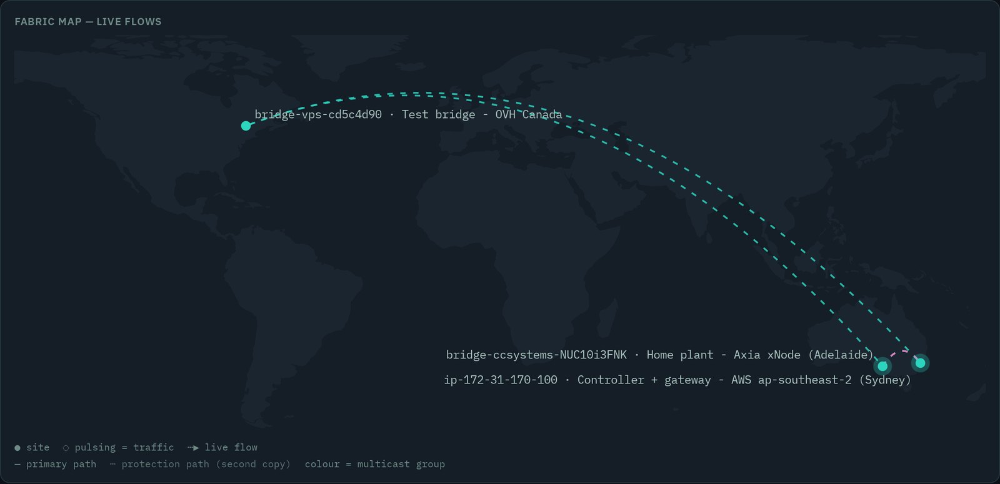
Declaring it. Statically on the sender:
ccf-agent --mode mesh ... --protect 239.192.7.210 --protect-via 10.99.0.2:7778
or centrally, which is normally what you want:
curl -X POST -H 'Content-Type: application/json' \
-d '{"group":"239.192.7.210","via":"10.99.0.2:7778"}' \
https://controller:8443/api/protect
The controller refuses a relay that already receives the group directly —
both copies would converge on one next hop and share a failure domain, which is
two copies of the same outage paid for twice. --protect-bind stays a local
flag: which uplinks a host owns is a property of that host, not something a
controller can know.
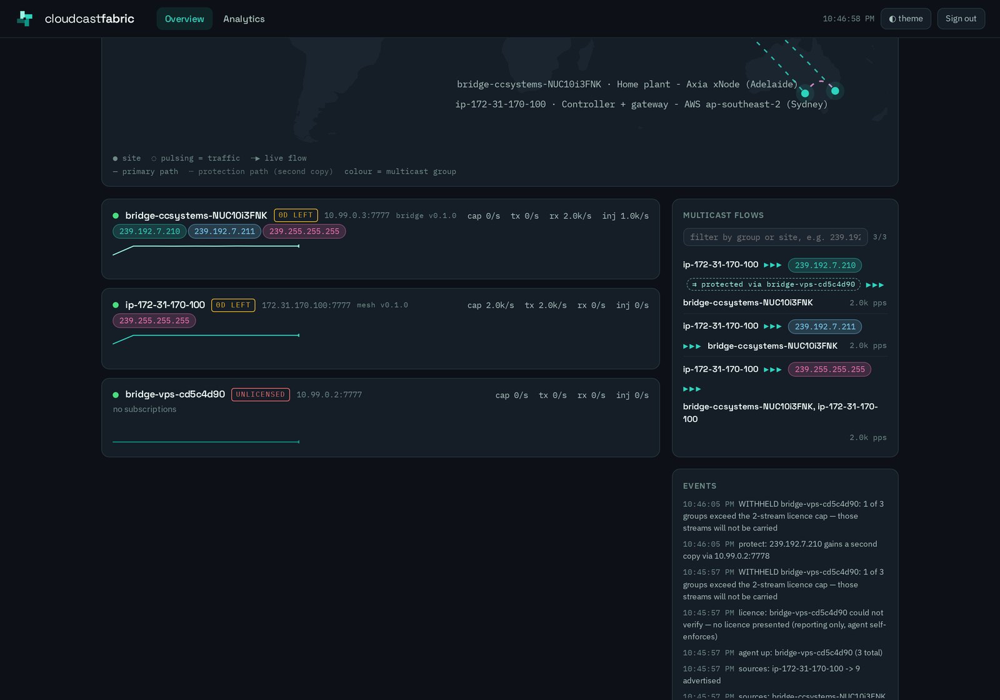
The badge reflects the duplicate rate at the receivers, not the configuration. A group declared protected whose second path is dead renders red with "no duplicates seen" — because configured-but-dead is precisely the failure this feature exists to prevent, and a badge that merely echoed the config would hide it.
How the merge works. The sender stamps one sequence number and transmits it twice. Every packet carries the id of the agent that assigned that sequence, so the receiver's de-duplication window is keyed on the originator rather than on whichever peer delivered the packet — and the second copy is simply a duplicate. Without that the two copies would occupy different windows and both would be injected.
What ST 2022-7 asks of a receiver. The standard requires the sender to transmit at least two streams whose RTP header and payload are identical in every copy — the Ethernet and IP headers may differ, which is what lets the copies take different paths. The receiver must then reconstruct seamlessly for as long as the path differential stays inside its class:
| Class | Typical use | Path differential |
|---|---|---|
| D — ultra low-skew | physical-layer LAN redundancy | ≤ 150 µs |
| A — low-skew | intra-facility | ≤ 10 ms |
| B — moderate-skew | short-haul, within a region | ≤ 50 ms |
| C — high-skew | long-haul | ≤ 450 ms |
Choose the class that matches the pair of paths, and let it set the buffer. A long-haul pair is Class C, so it wants a budget in the hundreds of milliseconds — far more than jitter alone would suggest.
Sizing the buffer is not optional. Protection is only seamless if output is held for at least the differential delay between the paths. Release the first copy immediately and a loss on the fast path arrives too late to fill. The de-jitter budget from 4.7 is that buffer, and both copies are scheduled against the fastest path, so the rule is simply:
budget ≥ differential delay + jitter
The agent measures the differential (ccf_path_spread_us) and warns when the
budget is under it, because that configuration de-duplicates but does not
protect and otherwise looks identical to one that does.
This is why a protection relay belongs near the primary path. Two regions 20 ms apart need 20 ms of buffer. A relay on the far side of the world needs hundreds, which is unusable for live audio — measured at 229 ms differential across a deliberately extreme three-continent test.
Is it worth it? On good cloud paths, both the public internet and inter-region peering carried 300 s at 1000 pps with zero loss. There, protection guards against rare events — a BGP reconvergence, a link or availability-zone failure — and doubles egress spend to do it. The edge is where it earns its keep: a residential or 4G uplink is where real loss lives, and two uplinks at one site have a differential of a few milliseconds, so they are seamless inside a budget you are already paying for.
Where it applies. Dual-path protection is carried by mesh-mode agents, which is where the fabric's own replication happens. A bridge agent reaching an on-prem plant over WireGuard sends a single copy to each target and relies on that tunnel; protect the leg between mesh agents, or place a mesh agent at the edge of the plant, when you want a stream duplicated across two paths.
Fabric layer, not the AES67 layer. What is duplicated and merged is the fabric datagram, so receivers on the plant LAN see one clean stream and need no 2022-7 support of their own. This is ST 2022-7's method applied to the fabric transport rather than a conformance claim about the AES67 packets themselves.
Verified: a sender in Sydney feeding a plant in Adelaide, protected via a relay in Canada. The direct path was severed for 35 s mid-stream and the audio continued with zero packets lost; duplicates resumed at 1001/s when it was restored.
4.9 Codecs on the WAN leg
Encode a stream as it enters the fabric, carry it compressed, and decode it back
to ordinary AES67 at the far plant. Nothing downstream changes: receivers see
L24/48000/2 at a=ptime:1, exactly as they would for an uncompressed group.
The saving is the point. A stereo AES67 stream is about 2.3 Mbit/s of payload, and roughly 3.1 Mbit/s once RTP, UDP, IP, the fabric header and the outer encapsulation are counted. Opus at 128 kbit/s lands near 0.15–0.2 Mbit/s — a 15–20× reduction, which is what makes 4G, residential and cross-region legs affordable.
| Codec | Frame | Added delay | Bitrate | Suits |
|---|---|---|---|---|
linear |
— | none | ~2.3 Mbit/s | anything with the bandwidth for it |
opus |
5 ms | ~7.5 ms | 64–256 kbit/s, continuous | live plant-to-plant, talkback, monitoring |
aptx |
5 ms | low | 384 kbit/s fixed | hosts with no codec libraries installed |
aptx-hd |
5 ms | low | 576 kbit/s fixed | as above, higher quality |
aac-lc |
21.3 ms | ~100 ms typical | 64–576 kbit/s | STL, contribution, distribution |
aac-he-v1 |
42.7 ms + SBR | ~150 ms or more | 16–128 kbit/s | low-bitrate distribution |
aac-he-v2 |
42.7 ms + SBR + parametric stereo | a third of a second or more | 20–64 kbit/s | lowest bitrate; not for live talkback |
Added-delay figures are design estimates pending measurement, and they are shown beside the selector in the dashboard for the same reason they are here: codec delay is the one cost of this feature that no counter can report. A stream running a third of a second late is a perfectly clean stream — no loss, no late packets, nothing on any dashboard. The moment of choosing is the only chance to see what it costs.
Encoding happens where a stream enters the fabric. A codec setting binds to the agent that captures the group from its own LAN. An agent that delivers a source — it imported it, or publishes it back under the original address — also sees that source, but setting a codec there has no effect, so the dashboard offers the control only where it applies.
One default, with per-source exceptions. Set a fabric-wide codec and every source follows it, including sources imported later — there is nothing to remember to configure at import time. Override individual sources where they need something different.
# fabric default — applies to every source without an override
curl -X POST -H 'Content-Type: application/json' \
-d '{"codec":"opus","bitrate":128000}' https://controller:8443/api/codec
# one source on one agent
curl -X POST -H 'Content-Type: application/json' \
-d '{"agent":"bridge-syd","group":"239.192.7.210","codec":"aac-lc","bitrate":256000}' \
https://controller:8443/api/codec
# remove the override, returning the source to the fabric default
curl -X POST -H 'Content-Type: application/json' \
-d '{"agent":"bridge-syd","group":"239.192.7.210"}' https://controller:8443/api/uncodec
Or per agent in the dashboard — see 6.1.
AAC bitrates are a fixed ladder, and off-ladder values are refused. The
controller validates the rate before it is stored, because an encoder that
cannot be built means the stream is carried uncompressed instead of dropped.
Refusing the value at the API is what stops a configuration that looks correct,
runs clean, and quietly delivers full linear bandwidth. aptx and aptx-hd are
fixed-rate and take no bitrate; linear is uncompressed and takes none either.
Decoding is never licensed separately. Encoding is the licensed capability and the one an operator chooses. A receiving plant did not choose the codec, so it can always decode and play what it is sent.
Changing a codec on a live stream swaps the decoder in place and keeps the stream running, and resets the drift correction with it, so the change takes effect immediately rather than settling over the following minute.
What to watch. ccf_codec_refused_total above zero means a stream is not
being carried at all — an agent was sent a codec it cannot decode. A steady
ccf_codec_conceal_total is audible artefacts on a path every other counter
calls clean, because the loss happened inside the codec rather than on the wire.
Full list in 6.3.
Newly added: aptX and aptX-HD. The two aptX rows are the most recent codecs,
and the only compressed options with no native library behind them — they are
pure Rust in the agent, so they run on a host with no codec packages installed at
all. Standard aptx is carried as aptX-compatible. aptx-hd is 24-bit at
576 kbit/s and is a paid tier, licensed and selected on its own. Opus (the
default) and the three AAC profiles run on a runtime-loaded audio library, so a
host without it refuses those streams — naming what to install — rather than
quietly carrying them uncompressed.
The codec matrix — which codec runs on which leg. The table above is the menu for the WAN leg: a source encoded as it enters the fabric and carried compressed. Everywhere else the codec is fixed by whatever sits at the far end, not chosen:
| Agent mode / leg | Codec | Chosen or fixed | Notes |
|---|---|---|---|
bridge / mesh — fabric WAN leg |
linear, opus, aac-lc, aac-he-v1/v2, aptx, aptx-hd |
chosen — fabric default + per-source override | encoded on ingress; encoding is licensed, decoding is not |
aes67-source — source generator |
linear (L16/L24) |
fixed | a standards-clean, PTP-locked AES67 stream; never compressed |
tieline-listen — a Tieline dials in |
Tieline session inbound; opus on the return leg; l24 AES67 into the studio |
fixed | the field unit becomes a multicast source; a studio group returns to the dialer, Opus-encoded |
sip — SIP answerer |
opus full-duplex |
fixed | the endpoint a soft codec (including Thread) dials |
| Browser / MCU conference | opus (WebRTC) |
fixed | point-to-point, or a mix-minus conference room |
| Fabric Thread (browser + iPhone) | opus — 48 kHz, 5 ms, independent send/recv bitrate |
fixed | dials tieline, sip or a Fabric room; see §4.12 |
Two things fall out of it. The WAN leg is the only place you pick a codec — everywhere else the peer's standard decides (a Tieline's session, SIP's Opus offer, WebRTC). And Opus is the contribution codec end to end: every dial-in path — the Tieline return leg, SIP, browser and Thread — is Opus, so a contributor's audio crosses at most one encode/decode boundary before it is linear AES67 on the studio LAN.
4.10 Running in Docker
CCF agents carry the DOCKER licence type (Airlock AIR-309): hardware-unbound,
precisely because containers and cloud instances have unstable hardware IDs. The
serial you pass fetches a signed licence from https://ccsystems.io/DockerLicense
at start and caches it, so one serial runs in a container, survives a rebuild, and
moves between hosts. Docker is the intended way to deploy an agent.
An agent is not a sandbox-friendly workload — it captures raw multicast, holds IGMP memberships, brings up WireGuard, puts a NIC in allmulti, and paces egress off a PTP clock. So it runs with host networking and two capabilities, not on an isolated bridge network.
Host prerequisites — the container shares the host's kernel and NICs:
- The Kernel and interface settings of §3 apply
to the host, not the container (
rp_filter, multicast, RT limits). - WireGuard in the host kernel (
modprobe wireguard; standard on modern kernels). The container bringswg0up in the host's network namespace. - PTP runs on the host:
ptp4lis bound to the NIC hardware, so it disciplines the NIC's PHC as in §4.7. The container only reads that PHC through--device /dev/ptpN; it does not runptp4litself.
Building an image. Build the static musl binary and copy it into a minimal
base:
# Dockerfile
FROM rust:1-alpine AS build
RUN apk add --no-cache musl-dev
WORKDIR /src
COPY . .
RUN cargo build --release -p ccf-agent --target x86_64-unknown-linux-musl
FROM alpine:3
COPY --from=build \
/src/target/x86_64-unknown-linux-musl/release/ccf-agent /usr/local/bin/ccf-agent
ENTRYPOINT ["/usr/local/bin/ccf-agent"]
Enrol once to get wg0.conf and a fabric address, then mount /etc/wireguard
and /etc/ccf into the running container:
docker run --rm --cap-add NET_ADMIN --network host \
-v /etc/wireguard:/etc/wireguard -v /etc/ccf:/etc/ccf \
ccf-agent:latest enrol --token ccf_join_<…> --serial <SERIAL> --name syd-bridge
Run a bridge:
docker run -d --name ccf-bridge --restart unless-stopped \
--network host \
--cap-add NET_ADMIN --cap-add NET_RAW \
--device /dev/ptp0 \
--ulimit rtprio=99 \
-e CCF_SERIAL=<SERIAL> \
-v /etc/ccf:/etc/ccf -v /etc/wireguard:/etc/wireguard \
ccf-agent:latest \
--mode bridge --lan-iface eth0 --lan-ip 192.168.1.50 \
--controller 10.99.0.1:8600 --pace-clock /dev/ptp0 \
--lan-jitter-ms 40 --listen 7777 --metrics 9464 --rt
Why each non-obvious flag is there:
| Docker flag | What the agent needs it for |
|---|---|
--network host |
Captures raw multicast on a real NIC, holds IGMP memberships, uses the host's wg0. A bridged container network sees none of that. |
--cap-add NET_RAW |
The AF_PACKET SOCK_RAW capture socket. |
--cap-add NET_ADMIN |
Bringing up WireGuard, the mesh TUN, and putting the capture NIC in allmulti so IGMPv2 membership reports reach the snooper. |
--device /dev/ptp0 |
The PTP hardware clock --pace-clock reads for egress pacing. Omit only if you pace on CLOCK_REALTIME (NTP-slewed — see §4.7). |
--device /dev/net/tun |
Mesh mode only — the TAP the agent creates. A bridge has no TAP and does not need it. |
--ulimit rtprio=99 |
--rt runs the hot path at SCHED_FIFO; the container needs the RT priority ceiling raised. |
Mesh and router are the same picture with different arguments (mesh also needs the TUN device):
# mesh (a cloud agent) — add --device /dev/net/tun
... --device /dev/net/tun ... ccf-agent:latest \
--mode mesh --addr 10.77.0.5/24 --controller 10.99.0.1:8600 \
--pace-clock auto --jitter-ms 40 --rt
# router — no TAP, no LAN
ccf-agent:latest --mode router --members 10.77.0.1:7777,10.77.0.2:7777 --rt
The serial. CCF_SERIAL (env, or a mounted /etc/ccf/licence.env) is the
licence. On start the agent fetches and caches the unbound Docker licence for it;
an agent with no serial runs unlicensed — a 2-stream cap and no codec, carrying
everything linear — and the dashboard reports that state per agent.
PTP settings, for containers. The PHC lives on the host; the container reads it:
- Discipline the host NIC's PHC to the plant grandmaster with the
slaveOnlyptp4lof §4.7 — a bridge must be slave-only so it never disturbs the plant clock. - Pass
--pace-clock /dev/ptp0(bridge) or--pace-clock auto(mesh), and mount the device with--device /dev/ptp0. - Never
phc2sysa Livewire grandmaster ontoCLOCK_REALTIME— its arbitrary timescale would throw the host clock decades off, which in a container also breaks TLS to the controller. The PHC is for pacing only. (A NIC with no PHC — some small-form-factor boards only expose the Wi-Fi clock — cannot be a clean reclock plant; use one with an Intel PHC.)
Sample-rate conversion (SRC). SRC is not a container flag — it is enabled per source at the controller, because it is a property of the delivery, not the agent:
curl -sk -X POST https://<controller>:8443/api/src \
-H 'content-type: application/json' \
-d '{"agent":"bridge-syd","group":"239.70.1.3","on":true}'
With SRC on, the destination bridge resamples that stream onto its local media clock (the PHC above) instead of only re-stamping it — the only thing that reconciles two independent grandmasters, and required whenever a plant receives audio clocked to a different grandmaster than its own (see §8). Any compressed codec import gets this for free (it is decoded and re-originated on the local clock); linear crossing between grandmasters needs SRC turned on explicitly.
docker-compose ties it together:
services:
ccf-bridge:
image: ccf-agent:latest
restart: unless-stopped
network_mode: host
cap_add: [NET_ADMIN, NET_RAW]
devices: ["/dev/ptp0:/dev/ptp0"]
ulimits: { rtprio: 99 }
environment: { CCF_SERIAL: "<SERIAL>" }
volumes:
- /etc/ccf:/etc/ccf
- /etc/wireguard:/etc/wireguard
command: >
--mode bridge --lan-iface eth0 --lan-ip 192.168.1.50
--controller 10.99.0.1:8600 --pace-clock /dev/ptp0
--lan-jitter-ms 40 --listen 7777 --metrics 9464 --rt
4.11 Built-in source generator
Every agent can be an AES67 source. ccf-agent --mode aes67-source emits a
standards-clean AES67 stream — L16/L24 multicast RTP, 48 kHz, fixed ptime —
whose RTP timestamp is derived from the PTP clock (it reuses the same
pace::Clock PHC the bridge paces on), so a strict AES67 receiver locks to it
exactly as it would to a hardware source. The audio is either an internal sine
tone or any file ffmpeg can read (wav, flac, mp3 …), resampled to 48 kHz
once at setup and looped from memory for gapless repeat. It announces itself over
SAP, so receivers discover it by name like any other source.
# a 1 kHz line-up tone as a discoverable AES67 source
ccf-agent --mode aes67-source --iface 192.168.2.205 --group 239.99.9.99 \
--port 5006 --format l24 --channels 2 --tone 1000 --sap
# a looping bed / test file
ccf-agent --mode aes67-source --iface 192.168.2.205 --group 239.99.9.99 \
--port 5006 --file /srv/audio/bed.wav --loop --sap
Sources can also be defined, started, stopped and persisted live from the
agent's /sources page (on the metrics port) rather than the command line — a
source with autostart set comes back after an agent restart. Run alongside a
bridge/mesh agent by giving the generator distinct --listen/--metrics ports.
It is the fastest way to put a known, PTP-locked signal on a plant for a codec
line-up, a receiver test, or a hold feed — without patching in hardware.
4.12 Contribution: Tieline codecs and Fabric Thread
Beyond carrying multicast between plants, the fabric terminates contribution codecs — the remotes, reporters and guests who dial into a studio. Three agent modes and one companion app cover this:
A hardware Tieline dials into the fabric —
ccf-agent --mode tieline-listenanswers a Tieline (ViA / Merlin / Gateway) dialing in, using the proven Gateway answerer handshake, and bridges the call to AES67 groups: the field unit's audio becomes a multicast source in the studio, and a studio group is Opus-encoded back to the dialer as the return leg. It serves one or more pre-configured lines, each with its own listen/audio ports, AES67 send/recv groups and an IP allowlist, so it runs unchanged in a studio agent or on a public gateway.ccf-agent --mode tieline-listen --iface 192.168.2.205 \ --line "name=studio1;listen=9002;audio=9000;\ send=239.99.9.80:5004:l24;recv=239.99.9.81:5004:l24;\ channels=2;bitrate=64000;allow=192.168.1.10,192.168.1.11"The fabric answers a SIP dial —
ccf-agent --mode sipis a SIP answerer (UAS): it accepts anINVITE, answers with an Opus offer, and runs full-duplex Opus/RTP bridged to the soundcard or AES67. This is the endpoint a soft codec — including Fabric Thread — dials to reach the studio.Browser and conference endpoints — the controller brokers a browser (WebRTC) caller to an agent codec endpoint and relays it through its STUN/TURN, point-to-point or as an MCU conference room where every caller gets a mix-minus (the programme plus every other caller, minus their own audio).
Fabric Thread is the contribution front-end to all of this: a codec in a browser and an iPhone app that dials a Tieline, a SIP endpoint or a Fabric studio room, full-duplex Opus, with metering, a mix, per-user mic processing and GPIO control surfaces (cough / talkback buttons and on-air / cue tally lamps carried as GPIO alongside the audio). It discovers its codec endpoints straight from a Fabric controller's API. Thread has its own manual — https://cloudcastsystemsau.github.io/cloudcastfabric-thread-manual/.
4.13 NMOS discovery and connection (IS-04 / IS-05)
An agent can present a site's AES67 streams to a broadcaster's AMWA NMOS
environment. ccf-agent --mode nmos runs an IS-04 Node — the discovery and
registration API, exposing Node, Device, Sender, Flow, Source and Receiver
resources — alongside an IS-05 connection endpoint. Every AES67 session
announced at the site (over SAP) becomes an NMOS Sender + Flow + Source with
a conformant SDP served by the Node, so an NMOS registry and controller find and
list them by name.
The agent registers to a registry discovered over mDNS/DNS-SD
(_nmos-register._tcp) or one named explicitly with --registry, and heartbeats
to keep its resources live. Activating a receiver over IS-05 tells the agent to
pull that flow into the fabric — so a connection made in an NMOS controller
becomes real fabric demand.
Design: NMOS lives at each edge — one Node per agent, per site — and the fabric carries media between edges and re-times on egress, so each site keeps its own local PTP grandmaster. NMOS is not stretched across the WAN.
ccf-agent --mode nmos --lan-ip 192.168.254.37 --label "CCF London" \
[--nmos-port 3212] [--registry http://registry.local:8235]
# omit --registry to discover the registry over mDNS
Browse http://<lan-ip>:<nmos-port>/x-nmos/node/v1.3/ to see the resources; the
Node also serves each sender's SDP transport file. The IS-04 Node and IS-05
connection surfaces are validated against the AMWA NMOS Testing Tool.
4.14 MXL bridge (EBU/NABA DMF)
ccf-agent --mode mxl-bridge makes the agent a Dynamic Media Facility (DMF)
media function, bridging a Media eXchange Layer (MXL) continuous audio flow
to and from AES67/Fabric. On ingress it writes a source — a tone or an AES67
stream — into an MXL flow in the shared-memory domain; on egress it reads an
MXL flow and emits it as PTP-locked AES67. An MXL-native application on the same
host therefore exchanges audio with the fabric through shared memory, with no RTP
on the local hop.
The MXL library (libmxl.so) is loaded at runtime (--mxl-so or $MXL_SO), and
the mode carries its own status and telemetry web page on the metrics port
(/ HTML, /status.json, and /metrics with ccf_mxl_* gauges). It is an
optional build — enable it with --features mxl — so the default agent stays
lean.
# ingress: a 1 kHz tone (or an AES67 stream) into an MXL audio flow
ccf-agent --mode mxl-bridge --mxl-domain /mxl \
--in tone:1000 --out mxl:/etc/ccf/flow-audio.json
# egress: an MXL flow out as a discoverable AES67 stream
ccf-agent --mode mxl-bridge --mxl-domain /mxl --iface 10.0.0.5 \
--in mxl:<flow-id> --out aes67:239.99.10.116:5004 --format l24 --sap
Like NMOS, this is MXL-at-edge, fabric-as-transport: MXL is the local
shared-memory exchange at each site, and the fabric carries audio between sites.
A container demo under demo/mxl/ runs the full ingress → flow → egress path.
5. Configuration reference
5.1 Agent command-line flags
Flags are positional-free --key value pairs; an unknown flag is ignored, and
a flag whose value is missing (or is itself another --flag, which is what an
empty environment variable expands to) is treated as unset.
All modes
| Flag | Default | Meaning |
|---|---|---|
--mode mesh|router|bridge |
— | Required. Anything else prints usage and exits 2. |
--listen <port> |
7777 |
UDP port for fabric traffic. All peers must agree. |
--metrics <port> |
9464 |
Prometheus endpoint. The controller's poller scrapes 9464 regardless of this value. |
--rt |
off | SCHED_FIFO priority 50 on both packet pumps. Warns and continues if unavailable. |
--cpu <n> |
unset | Pin the pumps to CPU n. Ignored in bridge mode. |
--no-sap |
off | Disable the SAP catalogue (mesh and bridge). The agent stops joining 239.255.255.255, advertises nothing to the controller and contributes nothing to the collision check. Router mode has no catalogue either way. |
--pace-clock auto|realtime|<dev> |
auto |
Clock driving egress pacing. auto prefers a PHC — the LAN NIC's in bridge mode, /dev/ptp0 otherwise — and falls back to CLOCK_REALTIME with a warning if none is usable. Only matters when a de-jitter budget is set. See 4.7. |
--apply-peers |
off | Apply the controller's direct-peer offers (see Direct peering) so the fabric forms direct data paths instead of relaying via the hub. Offers are applied additively and never disturb an existing peer. Off by default; the fabric stays hub-and-spoke until a fleet opts in. |
Mesh mode
| Flag | Default | Meaning |
|---|---|---|
--addr <cidr> |
— | Required. Address for ccf0, e.g. 10.77.0.1/24. |
--tun <name> |
ccf0 |
Interface name (max 15 chars). |
--mtu <n> |
1300 |
MTU set on the interface. |
--controller <ip:port> |
unset | Enables controller-driven routing. When set, --peers is ignored. |
--peers <ip:port,...> |
empty | Static replication targets, used only without --controller. |
--protect <group,...> |
empty | Groups to carry twice. Needs --protect-via and/or --protect-bind, or the agent exits rather than pretending to protect. Usually left to the controller instead — see 4.8. |
--protect-via <ip:port> |
unset | Send the second copy to this next hop (normally a relay). |
--protect-bind <ip> |
unset | Send the second copy from this local address, so it leaves by another uplink. Warns loudly if it cannot bind, rather than silently sending both copies down one path. |
--jitter-ms <n> |
0 |
De-jitter budget for TAP egress. 0 keeps forward-on-arrival, which hands the local application raw WAN jitter. Any cloud consumer of AES67 wants 30–40. Adds exactly this much fixed latency. |
--forward-ptp |
off | Forward UDP 319/320 across the fabric. Leave off. |
Router mode
| Flag | Default | Meaning |
|---|---|---|
--members <ip:port,...> |
— | Required, non-empty. Fan-out targets. |
Bridge mode
| Flag | Default | Meaning |
|---|---|---|
--lan-iface <name> |
— | Required. Interface carrying plant multicast. |
--lan-ip <ipv4> |
— | Required. This host's address on that LAN; used for IGMP joins and as the querier source. |
--controller <ip:port> |
— | Required. |
--lan-subs <group,...> |
empty | Static groups to pull down from the fabric, merged with snooped state. |
--lan-jitter-ms <n> |
0 |
De-jitter budget for LAN egress. 0 forwards on arrival. A jittery WAN in front of real AoIP receivers wants 30–40. Adds exactly this much fixed latency. |
--forward-ptp |
off | As above. |
The agent identifies itself to the controller as the contents of
/proc/sys/kernel/hostname (mesh/router) or bridge-<hostname> (bridge).
There is no flag to override it.
5.2 Agent environment file
packaging/install.sh writes /etc/ccf/agent.env, which the systemd unit
expands into its ExecStart line:
| Variable | Written as | Notes |
|---|---|---|
CCF_MODE |
--mode |
mesh or router from the installer; bridge works if you also supply the bridge flags via CCF_EXTRA. |
CCF_LISTEN |
--listen |
|
CCF_PEERS |
--peers |
Empty value is safely ignored by the argument parser. |
CCF_TUN |
--tun |
Installer always writes ccf0. |
CCF_ADDR |
--addr |
|
CCF_MTU |
--mtu |
Installer writes 1300. |
CCF_METRICS |
--metrics |
Installer writes 9464. |
CCF_EXTRA |
appended verbatim | Installer writes --rt. Put --controller, --cpu, bridge flags here. |
5.3 Controller environment variables
| Variable | Default | Effect |
|---|---|---|
CCF_ADMIN_PASSWORD |
empty | Break-glass password. Empty disables password sign-in. |
CCF_API_KEYS |
empty | Comma-separated API keys for non-interactive clients. Present one as X-API-Key: <key> or Authorization: Bearer <key>; it grants the same access a dashboard session does. Empty disables key auth. |
CCF_OIDC_AUTHORITY |
empty | Cognito user-pool issuer URL. |
CCF_OIDC_CLIENT_ID |
empty | App client id. SSO turns on only when authority and client id are both set. |
CCF_OIDC_CLIENT_SECRET |
empty | App client secret. |
ASPNETCORE_URLS |
http://0.0.0.0:8601 |
Standard ASP.NET Core binding; set both HTTP and HTTPS URLs here. |
Standard ASP.NET Core Kestrel and logging variables also apply. Command-line
arguments are passed to the web host builder, so --urls works too.
5.4 ptp-gm.conf
For the bridge-side slave configuration see 4.7.
The shipped grandmaster profile (packaging/ptp-gm.conf), applied to ccf0:
| Setting | Value | Why |
|---|---|---|
masterOnly |
1 | Never becomes a slave; there is nothing on ccf0 to sync to. |
domainNumber |
0 | |
priority1 / priority2 |
128 / 128 | Identical fabric-wide — hosts are peers, not a hierarchy. |
clockClass |
6 | Locked to a primary reference (the GPS-backed PHC via chrony). |
clockAccuracy |
0x21 |
Within 100 ns. |
timeSource |
0x20 |
GPS. |
logSyncInterval |
−3 | 8 syncs/s. |
logAnnounceInterval |
1 | Announce every 2 s; announceReceiptTimeout 3. |
logMinDelayReqInterval |
0 | 1 delay request/s. |
network_transport |
UDPv4 |
AES67-style multicast PTP over IPv4. |
time_stamping |
software |
ccf0 is virtual; the traceable reference is already in the system clock. |
5.5 systemd units
| Unit | Runs | Notes |
|---|---|---|
ccf-agent.service |
/usr/local/bin/ccf-agent |
After=network-online.target chronyd.service, Restart=always (2 s), LimitRTPRIO=99, LimitMEMLOCK=infinity. Runs as root in v1. |
ccf-controller.service |
dotnet /opt/ccf-controller/CloudCastFabric.Controller.dll |
Optional EnvironmentFile=-/etc/ccf/controller.env, Restart=always. |
ccf-ptp-gm.service |
/usr/local/sbin/ptp4l -f /etc/ccf/ptp-gm.conf -m |
Requires=ccf-agent.service; waits for ccf0 in ExecStartPre. |
ccf-ptp-slave.service |
/usr/sbin/ptp4l -f /etc/ccf/ptp-slave.conf |
Bridges only. Disciplines the LAN NIC's PHC to the plant grandmaster, slave-only. Mutually exclusive with ccf-ptp-gm on the same interface — a bridge follows the plant clock, it does not serve one. See 4.7. |
6. Operations
6.1 The dashboard
Browse to the controller — https://<host>:8443 (or http://<host>:8601). The
sign-in page offers Sign in with Cognito SSO and, below the divider "or
break-glass password", a password field and Sign in; a bad password
returns "Wrong password." Requests originating from loopback are treated as
authenticated and skip the page entirely, which is what lets local scripts and
health checks read /state.
The header carries the two tabs — Overview and Analytics — a clock, a ◐ theme toggle (light/dark, remembered in local storage) and Sign out. Everything refreshes every 3 seconds.
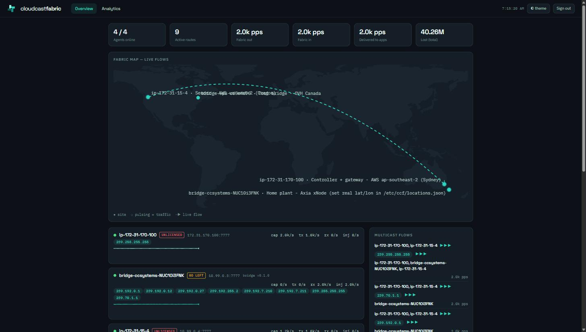
Overview. Six tiles across the top: Agents online, Active routes, Fabric out, Fabric in, Delivered to apps, Lost (total). Below them, one card per agent showing its short hostname, data address, the four live rates (cap captured from the app side, tx sent to the fabric, rx received from the fabric, inj injected to local apps), its subscription pills, and a sparkline of tx+rx. With nothing connected the list reads "no agents connected"; an agent with no joins shows "no subscriptions". To the right, Active routes lists each group against its target endpoints ("no active routes — no app has joined a group" when idle) and Events shows the last 40 controller events — agent up/down, subscription changes, sign-ins, admin actions — or "quiet".
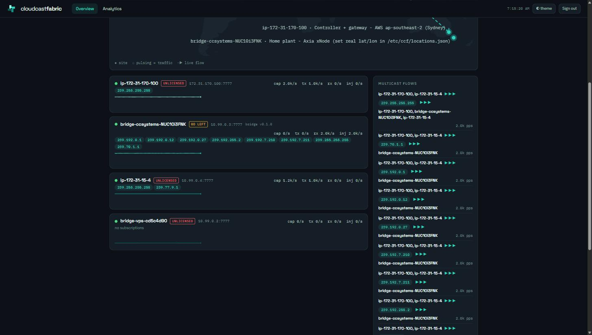
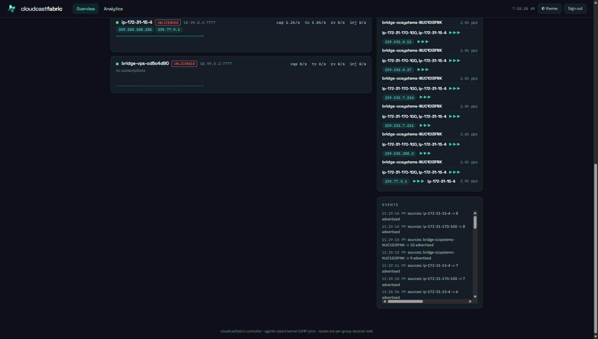
The fabric map places each site by geolocation, with an arc per stream
coloured by group so a flow can be followed by eye, and a dashed pair through
the relay where a group is protected. Scroll to zoom, drag to pan, and use
+ − fit reset or the keyboard (+ - 0 f, arrows) when the map has
focus. Site markers and labels keep their size as you zoom. Clicking a site
opens that agent's page.
The agent page — click any agent card, or go to /agent/{id} — is where a
single site is configured:
- Identity and licence — status, build, licence state and term, stream cap.
- Live rates — captured, sent to the fabric, received, injected, plus loss and duplicates.
- Runtime — de-jitter budget and pace clock. The budget applies live; the clock takes effect at the agent's next restart.
- What this agent may receive —
opendelivers any group a local device joins;publisheddelivers only what has been published to it. This filters what the agent receives, not what it captures and sends. - Sources on this LAN — one card per source, showing where it currently goes and the codec it is carried with (4.9).
- Delivered to this agent — imports and publications, each removable.
- Integrity — loss, duplicates, late, codec counters, protection copies and measured path differential.
- Actions — disconnect the session, recompute all routes.
Add new deliveries from the source matrix at /distribute, which shows every
source against every destination at once.
Analytics charts the poller's history: Fabric throughput — packets/s (tx and rx per agent), Injected to apps — packets/s, Fabric delay — share ≤ bound (latest) as a bar chart over the 20/50/100/200/500/1000 µs bounds for one receiving agent, and Loss / duplicates / late (totals) as a table.
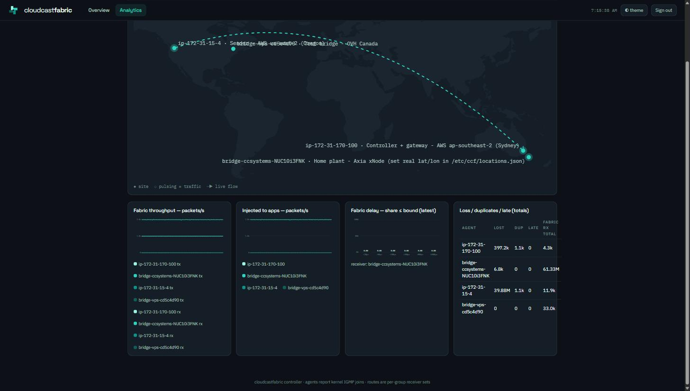
The footer states the operating principle: "agents report kernel IGMP joins · routes are per-group receiver sets".
Each multicast group carries a stable colour across its pill, its map arcs and the agent cards, so one stream can be followed by eye. The flow list filters on group address or site name, and the map filters with it.
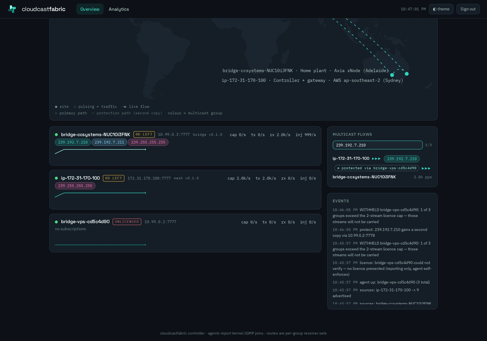
6.2 HTTP surface
| Method | Path | Purpose |
|---|---|---|
| GET | / |
Dashboard (redirects to /login when unauthenticated) |
| GET | /login |
Sign-in page |
| POST | /login |
Form field password; sets the ccf_session cookie (HttpOnly, 7 days) |
| GET | /auth/cognito |
Starts the OIDC challenge (redirects to /login when SSO is off) |
| GET | /logout |
Drops the session and cookie |
| GET | /agent/{id} |
Per-agent configuration page (6.1) |
| GET | /distribute |
Source distribution matrix — every source against every destination |
| GET | /api/sources |
The source catalogue plus each agent's policy, publications, imports and codec settings |
| GET | /api/overview |
Everything the dashboard renders: agents, rates, series, routes, events, fabric totals |
| GET | /api/events |
The fabric event log (6.11). Filter with ?cat=, ?agent=, ?since=<ms>, ?limit=; most-recent-first |
| GET | /api/deliveries |
The flat list of currently-routed agent-to-agent flows, each with its resolved codec |
| POST | /api/action/disconnect/{id} |
Closes that agent's control session; it reconnects within ~2 s |
| POST | /api/action/recompute |
Forces a route recompute and push |
| POST | /api/import |
Body {"agent","group","name"}. Allocates an address from the 239.193.0.0/16 pool and pushes the translation to that agent (see 6.10). Idempotent — re-posting an existing group returns the address already assigned |
| POST | /api/protect |
Body {"group","via"}. Declares a protection path (4.8). Refused if via already receives the group directly, since both copies would then share a failure domain |
| POST | /api/policy |
Body {"agent","mode"}, mode open or published |
| POST | /api/publish / /api/unpublish |
Body {"agent","group"}. What a published-mode agent may receive |
| POST | /api/codec |
Body {"codec","bitrate"} for the fabric default, or {"agent","group","codec","bitrate"} for one source (4.9). The bitrate is validated against the codec's ladder before it is stored |
| POST | /api/uncodec |
Body {"agent","group"}. Returns the source to the fabric default |
| POST | /api/agent/{id}/config |
Body {"jitterMs","paceClock"}. Jitter applies live; the pace clock needs a restart |
| POST | /api/unprotect |
Body {"group"}. Returns the group to a single path |
| GET | /state |
Compact JSON — agents (id, data address, groups) and the full route table. Intended for loopback scripts and health checks |
6.3 Metrics
Every agent serves Prometheus text format on 0.0.0.0:<--metrics> (default
9464) with no authentication and no TLS, on every request path except GET /sap, which returns that agent’s SAP catalogue as JSON (6.9). All values are
atomics updated on the hot path.
| Metric | Type | Meaning |
|---|---|---|
ccf_tun_rx_packets_total |
counter | Frames taken from the app side — ccf0 in mesh mode, the LAN capture in bridge mode (bridge counts only frames that had a route). |
ccf_tun_tx_packets_total |
counter | Frames delivered to the app side — injected into ccf0, or emitted onto the LAN. |
ccf_fabric_tx_packets_total |
counter | Datagrams sent to peers. Counts once per target, so it is N× the capture rate for a fan-out of N. |
ccf_fabric_tx_bytes_total |
counter | As above, header included. |
ccf_fabric_rx_packets_total |
counter | Valid fabric datagrams received. |
ccf_fabric_rx_bytes_total |
counter | As above. |
ccf_fabric_lost_total |
counter | Sequence gaps evicted unfilled from the de-dup window. |
ccf_fabric_dup_total |
counter | Packets already marked received. |
ccf_fabric_late_total |
counter | Packets older than the 1024-slot window. |
ccf_fabric_delay_us |
histogram | Send-to-receive delay in microseconds. Buckets 10, 20, 50, 100, 200, 500, 1000, 5000, 10000, +Inf, plus _sum and _count. |
ccf_lan_pace_depth |
gauge | With a de-jitter budget set (--lan-jitter-ms in bridge mode, --jitter-ms in mesh): packets currently held in the queue. Should sit near jitter budget × packet rate — 40 at 40 ms and 1000 pps. Pinned at the 4096 cap means the pacer cannot keep up. |
ccf_lan_pace_late_total |
counter | Packets that arrived after their release deadline had already passed. |
ccf_lan_pace_drop_total |
counter | Packets discarded because the queue was full. Any sustained rate here is audible. |
ccf_lan_capture_packets_total |
counter | Bridge only: frames the kernel passed up the capture socket, after the BPF filter. Compare against the plant's total multicast rate to see how much the filter is saving. |
ccf_lan_capture_drops_total |
counter | Bridge only: frames the kernel discarded because userspace could not keep up. Must stay at 0. A non-zero value means media traffic is starving the capture socket, which loses IGMP reports and silently withdraws routes. |
ccf_protect_tx_total |
counter | Second copies queued on the protection path. Sender side. |
ccf_protect_fail_total |
counter | Second copies that could not be sent — the protection path is unusable. Media keeps flowing on the primary, which is the point, but you are no longer protected. |
ccf_path_spread_us |
gauge | Measured differential delay between the fastest and slowest way a packet reaches this agent. The de-jitter budget must exceed it (4.8). |
ccf_pace_spread_over_budget_total |
counter | Packets where the differential exceeded the budget — de-duplicated but not protected. |
ccf_merge_wins_total{peer} |
counter | Packets this peer delivered first, i.e. the copy that was used. |
ccf_merge_dups_total{peer} |
counter | Copies this peer supplied after another had already delivered them. This is the liveness signal: a healthy protection path shows dups at roughly the stream rate and wins near zero. When it starts winning it is covering for the primary. Zero of both means it is dead. |
The controller's poller scrapes http://<agent data ip>:9464/metrics every 5 s
and keeps 720 samples (~1 hour) per agent in memory. Nothing is persisted: a
controller restart loses the history, though the counters on the agents keep
running. A scrape failure is silent — it surfaces as the growing metrics Ns
ago value in the agent dialog.
Because the poller's port is hard-coded, an agent started with a non-default
--metricswill register and route normally but show all-zero rates on the dashboard.
6.4 Agent status page
Every agent serves a small HTML status page at GET / on its metrics port
(default 9464), alongside the Prometheus text on every other path. It is the
single-host view for when you are on one machine, or when the controller is the
thing that is broken.
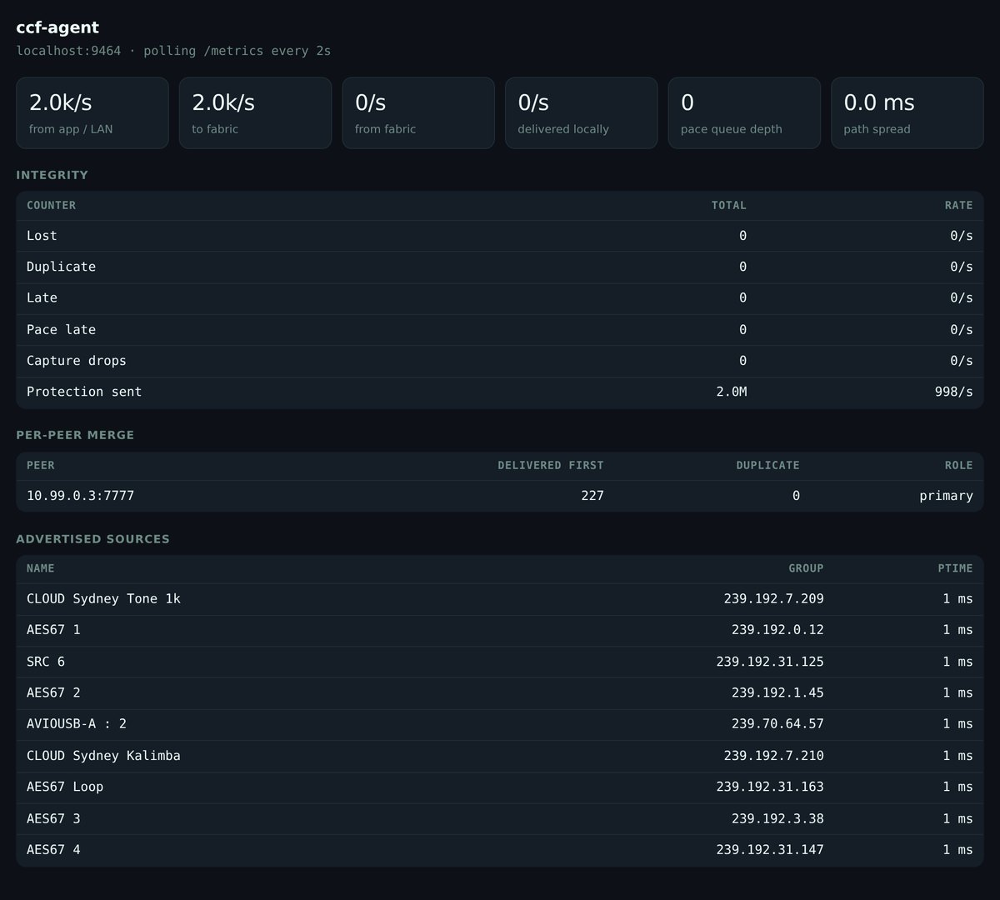
It is deliberately small — one self-contained page, no dependencies, no build
step, about 7 KB — and it is built entirely client-side from the same
/metrics the agent already serves, so it cannot drift from the real numbers
and costs nothing when nobody has it open.
The per-peer merge table labels each peer primary, protection (live), covering or idle, which is how you tell at a glance whether a protection path is carrying anything. Warnings name the consequence rather than the number: capture drops are explained as "IGMP reports may be lost, which withdraws routes and silences receivers".
It has no authentication, exactly like /metrics. Keep the metrics port
inside a security group or a tunnel.
Front panel
The same agent also serves a 1U rack-panel front display at GET /panel, in
the house style of the other CloudCast products' panels. It is meant for a NOC
wall or a shared screen — full page width, true 19″ rack proportions, read-only.
http://<agent>:9464/panel
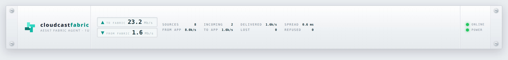
A left brand block, two throughput read-outs (to/from the fabric as achieved
Mb/s), a stat rail — sources advertised, encoded streams in, delivered pps, path
spread, and loss/refused counters — and a green/amber/red health lamp that goes
amber when paths spread past the de-jitter budget and red on refused, loss or
capture drops. Like the status page it is self-contained and polls the same
/metrics + /sap, so it never disagrees with the real numbers.
The agent's other read-only endpoints on the same port are GET /sap (its SAP
catalogue as JSON, 6.9) and GET /monitor?group=<addr>&side=<a|b> (a live audio
tap for the dashboard monitor, CCF-90).
6.5 Adding an agent
- Launch a PHC-capable instance; set
phc_enable=1and reboot (§3). - Security group: UDP 7777 from the other fabric members, TCP 9464 from the controller, TCP 8600 outbound to the controller.
- Install the agent with a free fabric address
(§4.2), adding
--controllertoCCF_EXTRA. - Install chrony against the PHC and, if local apps need PTP, the grandmaster unit (§4.4).
- Confirm on the dashboard: the agent appears in Overview with its data
address and "no subscriptions", and Events logs
agent up: <host>. - Join a group from an application on
ccf0. Within a poll cycle the pill appears on the card, the group shows in Active routes, and the sender's route table updates — measured at ~1 ms controller-side, ≤2 s end-to-end in validation.
Nothing needs restarting anywhere else: route pushes go to every agent on every change.
6.6 Bridging a site
- Stand up connectivity to the cloud (WireGuard in the validated deployment), with the cloud-side host forwarding and routing the VPC range back down the tunnel.
- Check the host firewall allows the tunnel and LAN interfaces, and — on a VM — disable TX checksum offload on the capture interface.
- Start the bridge (§4.6). The journal should
log
control: connected to <controller>. - Cloud → plant: a LAN receiver joins a group; the bridge logs
bridge: LAN host wants <group>, subscribes, and the cloud sender starts transmitting. On exit you should seebridge: LAN host left <group>and the route clear. - Plant → cloud: a cloud application joins a group; the bridge installs a
real IGMP join on the LAN within ~2 s (
bridge: joined <group> on LAN, visible inip maddr show dev <iface>) and plant traffic starts flowing up.
Measured over Canada↔Sydney public internet: 20,000/20,000 packets each way, zero loss, ~1.1–1.5 ms jitter (p50→p99.9). The absolute one-way delay was pure geography; an in-country site sees 5–15 ms.
6.7 Verifying a path with ccf-spike
ccf-spike is the bundled bench tool. Two of its three modes
are still the quickest way to test a fabric path end to end:
# receiver, on the destination host
ccf-spike sink --group 239.69.1.1:5004 --bind 10.77.0.2 --secs 75
# sender, on the source host — AES67-shaped: L24 stereo 48 kHz, 1 ms packets
ccf-spike source --group 239.69.1.1:5004 --bind 10.77.0.1 --pps 1000 --secs 60
--bind is the local interface address to use (ccf0's address in the cloud,
the LAN address on a bridge). The sink reports received/lost counts and
one-way delay percentiles; those delay figures are only meaningful when both
hosts are PHC-disciplined. ccf-spike agent --peer <ip:port> --listen <port> [--tun ccf0] is the original standalone two-host encapsulator, superseded by
ccf-agent.
Start the sink first — a group with no subscriber is not routed, so a sender started alone transmits nothing at all (by design).
6.8 Checking the clock
chronyc tracking # reference should be PHC0; root dispersion ~1 µs
chronyc sources
systemctl status ccf-ptp-gm
journalctl -u ccf-ptp-gm # ptp4l -m logs its master state here
A host that has lost its PHC reference still forwards media perfectly; what
degrades is the traceability of the time its local grandmaster serves, and the
credibility of the ccf_fabric_delay_us histogram.
On a bridge, the questions are different — it follows the plant clock rather than serving one:
journalctl -u ccf-ptp-slave # want: UNCALIBRATED to SLAVE on MASTER_CLOCK_SELECTED
# then rms settling to single-digit microseconds
journalctl -u ccf-bridge | grep 'clock=' # which clock pacing actually chose
The startup line is the authority on what pacing is using, and it never guesses silently:
pace: /dev/ptp0 offset from CLOCK_REALTIME is -1784761802.124172s, resampling every 1s
ccf-agent bridge: lan=eth0 (192.168.1.50) ... lan_jitter_ms=40 clock=/dev/ptp0
An offset of roughly −1.78 × 10⁹ s is normal against a Livewire grandmaster and
confirms the arbitrary timescale — it is not an error. If the line reads
clock=CLOCK_REALTIME when you expected a PHC, the agent will also have logged
why (device absent, unreadable, or not answering) followed by a warning that the
release cadence will wander.
6.9 Discovery: SAP announcements
AoIP senders advertise themselves with SAP (RFC 2974) carrying an SDP body (RFC 4566): a periodic UDP announcement to 239.255.255.255:9875 describing one stream — its name, group, payload type, encoding and packet time. It is how a console populates its source list, and it is vendor-neutral: a single capture in one plant carried Axia, Dante and Airlock announcements side by side.
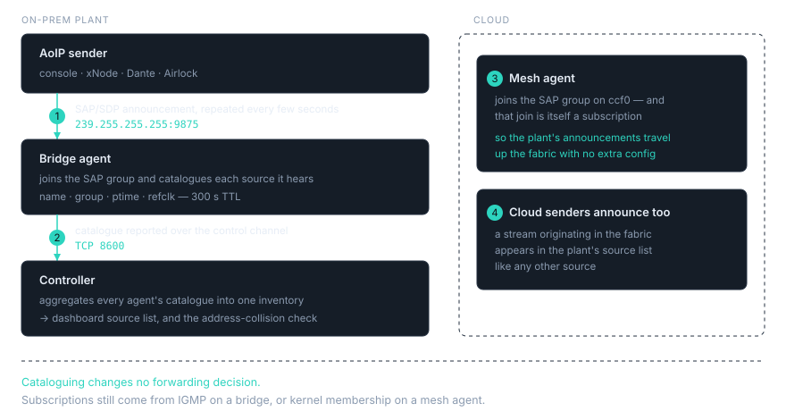
Every agent joins that group and keeps a catalogue of what it hears, in
both mesh and bridge mode, unless started with --no-sap. An entry lives for
300 s after its last announcement, so a sender that stops advertising ages
out rather than lingering.
| What is read | Notes |
|---|---|
Session name (s=) |
Shown as the source name everywhere |
Group and port (c= / m=) |
The multicast address the stream is on |
Payload type and encoding (a=rtpmap) |
e.g. L24/48000/2 |
Packet time (a=ptime) |
Drives the packet-time check in 6.9 |
Reference clock (a=ts-refclk) |
RFC 7273; shows what the sender is locked to |
| Vendor keywords | Retained as-is for identification |
Delete announcements |
Withdraw an entry immediately rather than waiting for the TTL |
Cataloguing is read-only — it changes no forwarding decision. An agent does not join a group because it heard it announced; subscriptions still come from IGMP on a bridge, or kernel membership on a mesh agent. What the catalogue gives you is an inventory, and the inputs to the collision check.
One deliberate consequence: because a mesh agent joins 239.255.255.255 on its TUN, that join is itself reported as a subscription, so a mesh node pulls the plant's announcements up the fabric with no extra configuration — the cloud sees what the ground is advertising. Cloud senders announce in the same way, so a stream originating in the fabric appears in the plant's source list like any other source.
Where to look:
curl -s http://<agent>:9464/sap | jq . # that agent's catalogue, as JSON
and on the dashboard, the agent dialog's Advertised row, plus the source names shown against any collision.
A SAP catalogue is an inventory of everything an agent can hear, and every
agent reports its catalogue to the controller. Scope a fabric to one
organisation, and use --no-sap on any agent that should not contribute to or
receive that shared inventory.
6.10 Multicast address collisions
Two plants built independently will both be using 239.192.7.210, and neither knows. Joined into one fabric, that address now means two different things.
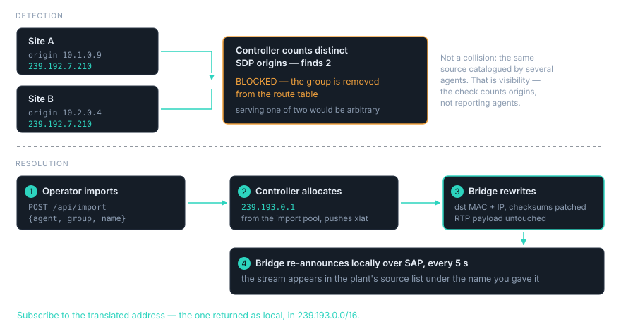
Detection. On every route recompute, the controller groups all catalogued sources by multicast group and counts distinct SDP origins — not distinct reporting agents. That distinction is the whole correctness of the check: every agent that has joined the SAP group catalogues the same announcement, so one source is legitimately reported by several agents. That is visibility, not a collision. A real collision is two different originators claiming one group.
| Kind | Condition | Consequence |
|---|---|---|
duplicate |
One group, two or more distinct SDP origins | The group is removed from the route table. Logged BLOCKED if it was routed, CONFLICT if nobody had subscribed yet. |
ptime |
A group an agent subscribes to, sourced elsewhere at a different packet time from that agent's own predominant ptime | Logged WARN. The group still routes — match the packet times, as below. |
Serving neither copy is deliberate: forwarding one of two is arbitrary, and forwarding both interleaves two unrelated streams into one address, which sounds like corruption rather than like a configuration error. Collisions are reported even for groups nobody has subscribed to, because a collision you learn about before someone subscribes is the cheap one.
Collisions log on transition, not on every recompute, so the journal shows changes rather than repeats.
Match packet times across a fabric. The ptime warning is worth acting on
promptly. A sender running 5 ms packets into receivers expecting 1 ms is
audible damage — in one measured case, exactly 96 frames of every 240 — while
every hardware counter at the receiving end reads zero. The fabric carries what
it is given; it does not re-packetise, and neither does address translation.
The remedy for a collision: import with address translation. Rather than renumber a plant, give the remote stream a new address on the receiving LAN:
curl -sX POST http://<controller>:8601/api/import \
-H 'content-type: application/json' \
-d '{"agent":"bridge-studio-a","group":"239.192.7.210","name":"SYD/Studio 1"}'
# -> {"agent":"...","group":"239.192.7.210","local":"239.193.0.1","name":"SYD/Studio 1"}
The controller allocates an unused address from the 239.193.0.0/16 import pool, records it against that agent, and pushes the translation to it. On LAN egress the bridge rewrites the destination MAC and IP and patches the IP and UDP checksums incrementally (RFC 1624) — the RTP payload, SSRC, sequence and timestamps are untouched, so the stream stays byte-identical to receivers. It also re-announces the translated stream locally over SAP every 5 s, so it appears in the plant's source list under the name you gave it.
Two things to know when you subscribe. The far end continues to advertise the
original address, which has no audio behind it on this LAN — subscribe to
the translated address, the one returned as local. And the local
re-announcement describes the stream as 1 ms with a local reference clock, so
take the packet time and clock from the originating plant rather than from the
re-announcement.
Imports survive an agent reconnect. They are held in controller memory and rebuilt from operator input, not from disk, so re-issue the POST after a controller restart.
6.11 Fabric event log
The controller keeps a categorised, agent-attributed timeline of what the fabric
is doing — the answer to "who requested what, when did that stream start, and
what codec is it carrying". It feeds the dashboard's Events panel and is exposed
at GET /api/events (filter with ?cat=, ?agent=, ?since=<ms>, ?limit=).
| Category | What it records |
|---|---|
discovery |
Each source a plant's SAP discovers or withdraws, by name and address — not just a count |
request |
A plant's subscription set, on change (the groups its LAN has joined) |
delivery |
Every agent-to-agent flow starting and stopping, with its resolved codec — diffed on each route recompute, so a steady fabric stays quiet |
stream |
What an agent actually began or ceased transmitting, reported by the agent itself (see below) |
op |
Operator actions: publish/unpublish, codec config, import, SRC, policy, licence and conflict transitions |
Durability. Events are held in a live in-memory ring for the dashboard and
appended as one JSON line each to a file that rotates once at a size cap, so
history survives a controller restart while the on-disk footprint stays bounded
at roughly twice the cap. The path and cap are set by CCF_EVENT_LOG (default
/etc/ccf/events.jsonl) and CCF_EVENT_LOG_CAP (default 8 MB). Greppable:
# every delivery that started or stopped in the last hour
jq -c 'select(.Cat=="delivery")' /etc/ccf/events.jsonl
Store-and-forward from the agents. The controller can log what routing
intended, but only the agent knows what it actually started sending. Each
agent buffers its stream events in a bounded in-memory ring and flushes them to
the controller over the existing control channel; while the controller or the WAN
is unreachable they accumulate (oldest dropped past the cap) and a failed flush is
requeued — a blip buffers rather than loses them. Emission is on stream-lifecycle
transitions only, never per packet, so it is off the audio path.
7. Troubleshooting
| Symptom | Likely cause | What to check |
|---|---|---|
Agent connects and subscribes, but the receiving application gets nothing; netstat -su shows UdpInErrors climbing |
Reverse-path filtering, or bad checksums from a virtualised capture | sysctl net.ipv4.conf.all.rp_filter must be 0 (the kernel takes the max of all and the interface value; the agent only sets the interface one). On a virtualised bridge host, ethtool -K <iface> tx off — deferred TX checksums in captured frames make the far end drop every packet. |
| Nothing at all crosses the fabric; no errors anywhere | Host firewall | A ufw default-deny policy ate the first bridge run entirely. Allow the fabric port, the tunnel interface (ufw allow in on wg0) and, on a bridge, the LAN interface. Check the INPUT policy directly if in doubt. |
| Agent shows on the dashboard with correct routes but all rates read 0 | Metrics unreachable on 9464 | The poller's port is hard-coded — an agent started with a different --metrics will never be scraped. Otherwise open TCP 9464 from the controller and confirm curl http://<agent>:9464/metrics. The agent page's metrics Ns ago value tells you how stale the last successful scrape is. |
/dev/ptp0 does not exist |
Missing driver option, or an instance type without PHC support | options ena phc_enable=1 in /etc/modprobe.d/ and a reboot. If it is still absent, the instance type has no PHC — c7g does not support it at all. Check PhcSupport in describe-instance-types before relaunching. |
ptp4l starts but clients reject its announces, or two hosts claim the same clock identity |
The fabric interface is a TUN, not a TAP | An interface with no MAC makes every ptp4l derive identity 000000.fffe.000000. ccf0 must be the agent-created TAP; check ip link show ccf0 has a real MAC. |
| A receiver reports a large burst of loss the moment it joins | Expected, if you are reading ccf_fabric_lost_total from before the join |
The TX pump does not advance the sequence number while a group has no subscribers, precisely so this does not happen at the fabric layer. Application-level gaps at first join usually mean the receiver bound ANY:port and is seeing other groups on the same port — bind per group. |
| A .NET bench tool or receiver "runs" but its sockets are dead | The dotnet launch race | nohup dotnet … & from an ssh session that exits immediately races the .NET runtime's signal/startup handling; sockets get torn down while the process keeps running, and a catch (SocketException) continue loop hides it. Keep the launching session alive, or use a systemd unit. |
Agent journal repeats control: <error>; reconnecting in 2s |
Controller unreachable or refusing | Confirm TCP 8600 reachability and that --controller points at an address on the interface you want fabric traffic to use — the agent advertises whichever source IP the kernel picks for that route. While disconnected the agent clears its routes and sends nothing. |
| Bridge never joins a group the cloud is asking for | The bridge only joins what the controller routes to it | Check the group is in Active routes with the bridge as a target, then ip maddr show dev <iface>. Remember the bridge deliberately never reports its own kernel IGMP state as subscriptions. |
A group stops routing; the journal shows BLOCKED <group>: duplicate multicast |
Two sites advertise the same multicast address | Working as designed (6.10) — serving one of two would be arbitrary. The detail line names both origins and their session names. Import one of them onto a translated address, or renumber a plant. |
BLOCKED <group>: duplicate multicast naming a site that no longer exists |
A decommissioned agent's controller session was never closed | An abruptly terminated host sends no TCP FIN, so its session can linger and the departed node goes on advertising its sources — blocking the group against a live sender. Confirm the named address is gone from Agents, then POST /api/action/disconnect/<agent id>. Traffic resumes immediately. |
A sender's ccf_tun_rx_packets_total climbs but ccf_fabric_tx_packets_total does not |
The group is not in that agent's route table | The agent drops frames for groups with no targets, by design. Note the controller's global /state can show a route while the per-agent push omits it — a blocked duplicate (above) is the usual reason. Capture the push to be sure: tcpdump -i <tunnel> -A -s0 'tcp and port 8600' | grep routes. |
ccf_lan_pace_depth pinned at 4096, ccf_lan_pace_drop_total climbing, almost nothing emitted |
The pacer is waiting on a deadline it will never reach | Check the startup line's clock= value. If it names a PHC the device may have stopped answering — the journal logs unreadable for Ns, holding the last offset. Falling back with --pace-clock realtime isolates it. |
| Snooped groups appear and disappear from an agent's subscription list | The capture socket is dropping IGMP under media load | Check ccf_lan_capture_drops_total — it must be 0. Without kernel-side capture filtering every IPv4 frame on the segment is copied to userspace, and control traffic is lost when the ring fills. |
| Bridge egress is smooth for minutes then slowly drifts against the plant, overruns climbing | Pacing on CLOCK_REALTIME rather than a PHC |
The startup line says which. Run ptp4l slave-only against the plant grandmaster and pass --pace-clock /dev/ptpN (4.7). Never phc2sys a Livewire grandmaster onto system time. |
| A source appears in the plant’s source list but has no audio | The original address of an imported group | After an import the far end still advertises the original address, which has no audio behind it on this LAN. Subscribe to the translated address — the one the controller returned as local, in 239.193.0.0/16. |
Journal shows WARN <group>: packet-time mismatch |
A site is subscribing to a stream sent at a different ptime | The group still routes; the fabric does not re-packetise. Match the sender’s packet time to the receiving plant. Audio that arrives but sounds wrong, with every hardware counter reading zero, is this. |
| An agent’s catalogue is empty; Advertised reads 0 | --no-sap, or nothing reaching 239.255.255.255 |
Confirm the flag is absent, then ip maddr show dev <iface> for the SAP group and tcpdump -i <iface> host 239.255.255.255 and port 9875. On a bridge, a plant that announces on a VLAN the LAN interface cannot see catalogues nothing while audio still flows. |
| Imports are gone after a controller restart | Imports are controller state, rebuilt from operator input | They survive an agent reconnect, not a controller restart. Re-POST /api/import; a group already imported returns the address it already has. |
| Browser warns about the certificate on :8443 | Self-signed certificate | Expected in the reference deployment. Replace the Kestrel certificate for anything long-lived. |
| Sign-in page shows no SSO button | OIDC not fully configured | Both CCF_OIDC_AUTHORITY and CCF_OIDC_CLIENT_ID must be set; the service logs oidc=off at startup otherwise. |
Quick sequence when a stream is missing, in order: Active routes on the dashboard (is the group routed at all, and to the right endpoint?), the sender's cap and tx rates, the receiver's rx and inj rates, then Integrity for lost/dup/late. Those five numbers localise almost every fault to a specific hop.
8. Scope and platform support
What a supported CloudcastFabric deployment looks like, and what the fabric carries.
Traffic. IPv4 multicast UDP on ccf0. The capture filter takes multicast
UDP and nothing else, so ordinary unicast on the host's real interfaces is
untouched by the fabric and continues to route normally.
Hosts. Linux, x86-64, running the agent as a system service under
systemd. The agent needs privilege for TAP creation, AF_PACKET capture and
SCHED_FIFO scheduling, which is why the unit runs it as root and pins it.
Modes. Mesh for direct agent-to-agent paths, router for large fan-outs,
and bridge for reaching an on-prem plant across WireGuard. Mesh agents under
a controller are subscriber-driven — traffic follows real IGMP joins. A mesh
agent started with static --peers, and router mode, replicate to their
configured peers instead; use the controller path wherever you want delivery
to track interest.
Timing. Every host disciplines to the AWS Nitro PHC and runs its own
local PTP grandmaster on ccf0. PTP is deliberately not carried across the
fabric; receivers lock to the local master, which serves the same
GPS-traceable time as every other host's.
Operations. The dashboard, the /state endpoint and systemd are the
operational surface; agent metrics are Prometheus-format on 9464.
Discovery and addressing. Agents catalogue SAP/SDP announcements on 239.255.255.255:9875 and report them to the controller, which builds a single inventory and checks it for two sites claiming one multicast group. A group with two distinct origins is withheld rather than served arbitrarily, and the 239.193.0.0/16 range is reserved for imported streams that have been translated onto a new local address. A fabric is scoped to one organisation: every agent's catalogue is shared with the controller and visible on the dashboard.
Controller state. The controller holds routing state in memory and rebuilds it from the agents as they reconnect. Agents keep forwarding on their current route table across a controller restart, so a control-plane bounce is not an audio outage. Dashboard history starts fresh after a restart.
CloudcastFabric manual. Performance figures quoted here were measured on the reference deployment described in §3.